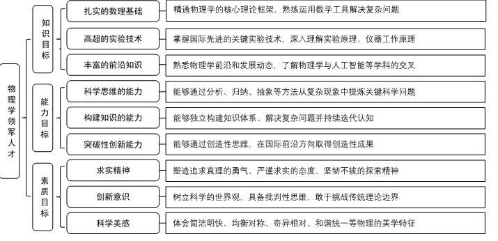
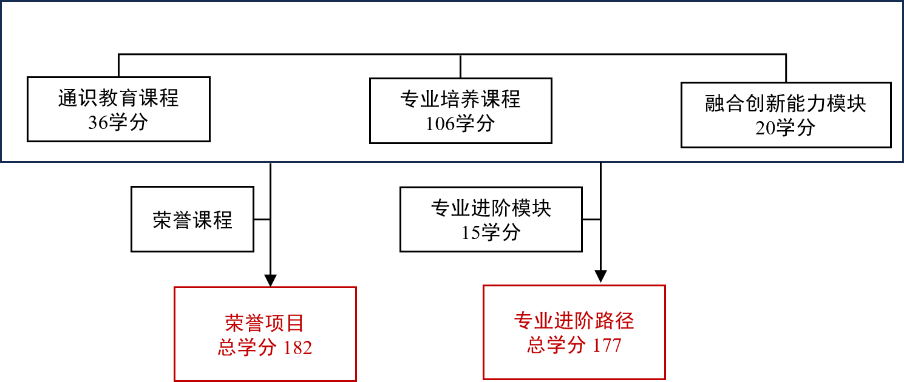

专业方案需与公共方案（ID 466）配合阅读，公共课程要求以公共方案为准。
复旦大学物理学系创建于1952年的全国高校院系调整。现有物理学国家一级学科，为国家双一流建设学科、国家级一流本科专业、上海市高峰学科，下设理论物理、凝聚态物理和光学三个二级国家重点学科，入选教育部“基础学科拔尖学生培养计划”2.0 基地。物理学科秉承“格物、致知、明理、通达”的理念，以先进的育人理念、雄厚的师资力量、和谐的管理氛围、优质的学术成果等优势被公认为国内最强的物理学科之一。
按照“宽口径、厚基础、重能力、求创新”的人才培养要求，以“2+X+Y”（2是通识和专业教育，X是多元发展路径，Y为融合创新能力）为途径，培养德智体美劳全面发展的物理学领军人才。学生应具有良好的思想道德素质和科学的世界观，具有人文情怀，具备突出的科学素养与创新思维、开阔的国际视野和跨文化环境下的交流与合作能力，能够服务国家重大战略需求。

1、修业年限：4年

物理+AI双学士学位项目：177学分
本路径学生必须修满教学计划规定的177学分（含实践学分不低于44.25学分；含美育学分不少于2学分，其中至少在“美学和艺术史论类”或“艺术鉴赏和评论类”课程中修读1学分，并至少参与一项艺术实践活动；劳动教育不少于32学时，并满足劳动周教育要求），包括通识教育课程36学分、专业培养课程106学分（其中学科基础课程33学分，物理专业核心课程38学分，AI专业核心课程35学分）、专业进阶模块修读15学分、融合创新能力模块20学分。
（一）本科学位
1. 4年级结束时，如达到学士学位要求者授予理学学士学位。
（1）修满规定的学分，达到本科教学培养方案规定的各项要求。
（2）以符合学生毕业时所在专业教学培养方案规定的所有课程的有效成绩为准计算平均绩点，且此平均绩点大于或等于2.0。
（3）在此基础上，达到物理学系“本科荣誉证书”获得条件的授予“本科荣誉证书”，具体要求请见物理学系“本科荣誉项目”实施方案。
2. 物理+AI学士双学位项目，如达到物理学-人工智能双学士学位要求者授予理学-工学双学士学位。
1. 课程体系
以14门高难度、大学分的荣誉课程为基础建立了本研融通的专业核心课程体系，以学科领域为横、课程内容梯度为纵建立了难度逐级提升的本研融通的专业进阶课程体系。为鼓励学生挑战自我，5门普通物理课程设置免修制度，免修考试通过后可直接修读后续高阶理论课程，6门高阶理论课程每学期都开设，可随时修读。鼓励学生修读荣誉课程。
2. 科研训练体系
建立螺旋递进的全周期科研训练体系，给低年级本科生配备学业导师/拔尖导师，鼓励师生共创，通过复芏计划等项目引导学生在“做中学、学中悟、悟中创”。在1、2年级设立物理前沿导论课和无学分讨论班，引导学生早进课题组轮转，培育兴趣。3年级通过2学期的科研实践训练，完成1项复芏计划（FDUROP）项目（䇹政、望道、登辉和曦源），激发创新志趣。
备注：每学期选修学分不得超过32学分。
每个模块列出其原始 planCourses 直接课程；父模块本身的课程也保留，不以子模块汇总替代。模块规则据官方详情 JSON 的 requireInfo、说明与备注字段排版。
| 课号 | 课程名称 | 学分 | 要求 | 开课学期 | 建议学期 | 总学时 | 备注 |
|---|---|---|---|---|---|---|---|
| MATH10026 | 微积分AⅠ Calculus A Ⅰ | 6.0 | 必修 | 1 | — | 108.0 | |
| MATH10027 | 微积分AⅡ Calculus A Ⅱ | 6.0 | 必修 | 2 | — | 108.0 | |
| MATH10031 | 线性代数A Linear Algebra A | 4.0 | 必修 | 1 | — | 72.0 | |
| MATH10034 | 概率论与数理统计B Probability and Mathematical Statistics B | 3.0 | 必修 | 2 | — | 54.0 |
| 课号 | 课程名称 | 学分 | 要求 | 开课学期 | 建议学期 | 总学时 | 备注 |
|---|---|---|---|---|---|---|---|
| PHYS10006 | 大学物理A：力学 College Physics A: Mechanics | 4.0 | 必修 | 1 | — | 90.0 | |
| PHYS10007 | 大学物理A：热学 College Physics A: Thermology | 2.0 | 必修 | 2 | — | 54.0 | |
| PHYS10008 | 大学物理A：电磁学 College Physics A: Electromagnetism | 4.0 | 必修 | 2 | — | 90.0 |
| 课号 | 课程名称 | 学分 | 要求 | 开课学期 | 建议学期 | 总学时 | 备注 |
|---|---|---|---|---|---|---|---|
| CS10004 | 程序设计 Programming | 4.0 | 必修 | 1 | — | 90.0 |
| 课号 | 课程名称 | 学分 | 要求 | 开课学期 | 建议学期 | 总学时 | 备注 |
|---|---|---|---|---|---|---|---|
| PHYS20003 | 经典力学 Classical Mechanics | 3.0 | 必修 | 3 | — | 72.0 | |
| PHYS20010 | 大学物理A：光学 College Physics A: Optics | 3.0 | 必修 | 3 | — | 72.0 | |
| PHYS20006 | 数学物理方法A Methods of Mathematical Physics A | 4.0 | 必修 | 3 | — | 90.0 | |
| PHYS20009 | 计算物理基础 Fundamentals of Computational Physics | 3.0 | 必修 | 4 | — | 54.0 | |
| PHYS20011 | 大学物理A：原子物理 College Physics A: Atomic Physics | 3.0 | 必修 | 4 | — | 72.0 | |
| PHYS20013 | 热力学与统计物理I Thermodynamics and Statistical Physics I | 4.0 | 必修 | 4 | — | 90.0 | |
| PHYS30010 | 量子力学I Quantum Mechanics I | 4.0 | 必修 | 5 | — | 90.0 | |
| PHYS30016 | 电动力学 Classical Electrodynamics | 4.0 | 必修 | 5 | — | 90.0 | |
| PHYS30011 | 固体物理 Solid State Physics | 4.0 | 必修 | 6 | — | 90.0 | |
| PHYS40012 | 量子力学II Quantum Mechanics II | 3.0 | 必修 | 6 | — | 54.0 | |
| PHYS40011 | 热力学与统计物理II Thermodynamics and Statistical Physics II | 3.0 | 必修 | 6 | — | 54.0 |
| 课号 | 课程名称 | 学分 | 要求 | 开课学期 | 建议学期 | 总学时 | 备注 |
|---|---|---|---|---|---|---|---|
| AIE310006 | 人工智能的编程基础 Fundamentals of Artificial Intelligence Programming | 2.0 | 必修 | 2 | — | 36.0 | |
| AIE310007 | 数据结构 Data Structure | 4.0 | 必修 | 3 | — | 54.0 | |
| AIE310009 | 人工智能的数学基础 Mathematical Foundations of Artificial Intelligence | 3.0 | 必修 | 3 | — | 54.0 | |
| AIE210006 | 计算机系统基础 Principles of Computer Systems | 3.0 | 必修 | 3 | — | 90.0 | |
| AIE310005 | 人工智能导论 Introduction to Artificial Intelligence | 3.0 | 必修 | 4 | — | 54.0 | |
| AIE310008 | 人工智能的软件基础 Foundations of Software for Artificial Intelligence | 3.0 | 必修 | 4 | — | 54.0 | |
| PHIL50006 | 人工智能的伦理与治理 The Ethics and Governance of AI | 2.0 | 必修 | 4,6 | — | 36.0 | |
| AIE831001 | 人工智能安全 AI Security | 3.0 | 必修 | 5 | — | 54.0 | |
| AIE410001 | 模式识别与机器学习 Pattern Recognition and Machine Learning | 3.0 | 必修 | 5 | — | 54.0 | |
| AIE410002 | 自然语言处理与大语言模型 Natural Language Processing and Large Language Models | 3.0 | 必修 | 6 | — | 54.0 | |
| AIE310004 | 计算机视觉 Computer Vision | 3.0 | 必修 | 7 | — | 54.0 | |
| AIE531001 | 人工智能前沿探索实践 Practical Exploration of Frontiers in Artificial Intelligence | 3.0 | 必修 | 7 | — | 54.0 |
| 课号 | 课程名称 | 学分 | 要求 | 开课学期 | 建议学期 | 总学时 | 备注 |
|---|---|---|---|---|---|---|---|
| EST10002 | 模拟电子学基础 Basics of Analog Electronics | 4.0 | 非必修 | 春 | — | 72.0 | |
| PHYS20012 | 基础物理建模 Basic Physics Modeling | 2.0 | 非必修 | 春 | — | 54.0 | |
| CHEM10003 | 普通化学A（上） General Chemistry A I | 2.0 | 非必修 | 秋 | — | 36.0 | |
| CHEM10004 | 普通化学A（下） General Chemistry A II | 2.0 | 非必修 | 春 | — | 36.0 | |
| CHEM10005 | 普通化学实验I Experiments in General Chemistry I | 1.0 | 非必修 | 秋 | — | 18.0 | |
| BIOL10001 | 现代生物科学导论A Introduction to Modern Biological Science A | 3.0 | 非必修 | 春,秋 | — | 54.0 | |
| BIOL10003 | 现代生物科学实验 Modern Life Sciences Lab | 1.0 | 非必修 | 秋 | — | 27.0 |
| 课号 | 课程名称 | 学分 | 要求 | 开课学期 | 建议学期 | 总学时 | 备注 |
|---|---|---|---|---|---|---|---|
| PHYS60025 | 固体理论 Solid State Physics Theory | 3.0 | 非必修 | 春 | — | 54.0 | 本研课程 |
| PHYS60016 | 表面物理 Surface Physics | 3.0 | 非必修 | 秋 | — | 54.0 | 本研课程 |
| PHYS50006 | 半导体物理A Semiconductor Physics A | 3.0 | 非必修 | 春,秋 | — | 54.0 | 本研课程 |
| PHYS60026 | 实验物理方法和技术 experimental physics methods and techniques | 3.0 | 非必修 | 春 | — | 54.0 | |
| PHYS50001 | 固态电子学与器件 Solid State Electronics and Devices | 3.0 | 非必修 | 秋 | — | 54.0 | |
| PHYS60020 | 凝聚态物理 Condensed Matter Physics | 3.0 | 非必修 | 秋 | — | 54.0 | |
| PHYS60018 | 铁磁学 Ferromagnetism | 2.0 | 非必修 | 秋 | — | 36.0 |
| 课号 | 课程名称 | 学分 | 要求 | 开课学期 | 建议学期 | 总学时 | 备注 |
|---|---|---|---|---|---|---|---|
| PHYS60023 | 量子光学 Quantum Optics | 3.0 | 非必修 | 秋 | — | 54.0 | 本研课程 |
| 课号 | 课程名称 | 学分 | 要求 | 开课学期 | 建议学期 | 总学时 | 备注 |
|---|---|---|---|---|---|---|---|
| PHYS60024 | 软凝聚态物理导论 Introduction to Soft Condensed Matter Physics | 3.0 | 非必修 | 秋 | — | 54.0 | 本研课程 |
| 课号 | 课程名称 | 学分 | 要求 | 开课学期 | 建议学期 | 总学时 | 备注 |
|---|---|---|---|---|---|---|---|
| PHYS60022 | 量子场论 Quantum Field Theory | 3.0 | 非必修 | 秋 | — | 54.0 | 本研课程 |
| PHYS60021 | 量子计算与量子信息 Quantum Computation and Quantum Information | 3.0 | 非必修 | 秋 | — | 54.0 | 本研课程 |
| PHYS50008 | 高等电动力学 Advanced Electrodynamics | 3.0 | 非必修 | 秋 | — | 54.0 | 本研课程 |
| PHYS60019 | 广义相对论 General Relativity | 3.0 | 非必修 | 春 | — | 54.0 | |
| PHYS50007 | 群论 Group Theory | 3.0 | 非必修 | 春 | — | 54.0 | |
| PHYS60028 | 量子多体理论 Quantum Many-Body Theory | 3.0 | 非必修 | 春 | — | 54.0 |
| 课号 | 课程名称 | 学分 | 要求 | 开课学期 | 建议学期 | 总学时 | 备注 |
|---|---|---|---|---|---|---|---|
| PHYS60017 | 粒子物理 Particle Physics | 3.0 | 非必修 | 秋 | — | 54.0 | 本研课程 |
| 课号 | 课程名称 | 学分 | 要求 | 开课学期 | 建议学期 | 总学时 | 备注 |
|---|---|---|---|---|---|---|---|
| PHYS60031 | 星际介质物理 The Physics of the Interstellar Medium | 3.0 | 非必修 | 春 | — | 54.0 |
| 课号 | 课程名称 | 学分 | 要求 | 开课学期 | 建议学期 | 总学时 | 备注 |
|---|---|---|---|---|---|---|---|
| PHYS60027 | 计算物理A Computational Physics A | 2.0 | 非必修 | 春 | — | 36.0 | 本研课程 |
| 课号 | 课程名称 | 学分 | 要求 | 开课学期 | 建议学期 | 总学时 | 备注 |
|---|---|---|---|---|---|---|---|
| CS30043 | 集合与图论 Set Theory and Graph Theory | 3.0 | 非必修 | 秋 | — | 72.0 | |
| CS30052 | 计算机组成与体系结构 Computer Organization and Architecture | 4.0 | 非必修 | 春 | — | 90.0 | |
| CS30036 | 计算机网络 Computer Networks | 3.0 | 非必修 | 秋 | — | 54.0 | |
| CS30058 | 机器学习系统 Machine Learning Systems | 3.0 | 非必修 | 春 | — | 54.0 | |
| CS20001 | 数据库系统 Database Systems | 3.0 | 非必修 | 春 | — | 90.0 | |
| CS30006 | 计算机图形学 Computer Graphics | 3.0 | 非必修 | 春 | — | 54.0 | |
| AIS531004 | AI物理 AI physics | 3.0 | 非必修 | 春 | — | 54.0 | |
| AIS310013 | 机器学习在物理实验中的应用 Applications of Machine Learning in Physical Experiments | 3.0 | 非必修 | 春 | — | 54.0 | |
| AIS410004 | 机器学习与原子核物理 Machine Learning and Nuclear Physics | 3.0 | 非必修 | 春 | — | 54.0 | |
| CS20020 | 软件工程 Software Engineering | 4.0 | 非必修 | 春 | — | 72.0 |
| 课号 | 课程名称 | 学分 | 要求 | 开课学期 | 建议学期 | 总学时 | 备注 |
|---|---|---|---|---|---|---|---|
| 101 | 无学分讨论班 Non-Credit Seminar | 0.0 | 必修 | — | — | — | 第3、4学期，需在各研究方向（理论物理、粒子物理与核物理、凝聚态物理、光学与原子分子物理、计算物理、天文/天体物理中的至少3个方向）的无学分讨论班轮转，学期结束需获得相应方向讨论班老师签字确认。 |
| 102 | 复芏计划(FDUROP) FDUROP | 0.0 | 非必修 | — | — | — | 第5、6学期，需要承担1项复芏计划（FDUROP）项目，详见复旦大学本科生学术研究资助计划管理办法。 |
| PHYS10009 | 大学物理实验Ⅰ College Physics Laboratory Ⅰ | 2.0 | 必修 | 1 | — | 54.0 | |
| PHYS10011 | 物理前沿导论 Introduction to Frontiers of Physics | 2.0 | 必修 | 2 | — | 36.0 | |
| PHYS20015 | 大学物理实验Ⅱ College Physics Laboratory Ⅱ | 2.0 | 必修 | 3 | — | 54.0 | |
| PHYS30008 | 科研实践Ⅰ Training in Scientific Research Ⅰ | 3.0 | 必修 | 5 | — | 72.0 | |
| PHYS20016 | 大学物理实验Ⅲ College Physics Laboratory Ⅲ | 2.0 | 必修 | 4 | — | 54.0 | |
| PHYS30009 | 科研实践Ⅱ Training in Scientific Research Ⅱ | 3.0 | 必修 | 6 | — | 72.0 | |
| PHYS30013 | 近代物理实验I Experiments in Modern Physics I | 4.0 | 必修 | 5 | — | 72.0 | |
| PHYS40002 | 本科毕业论文 Undergraduate Thesis | 2.0 | 必修 | 8 | — | 36.0 |